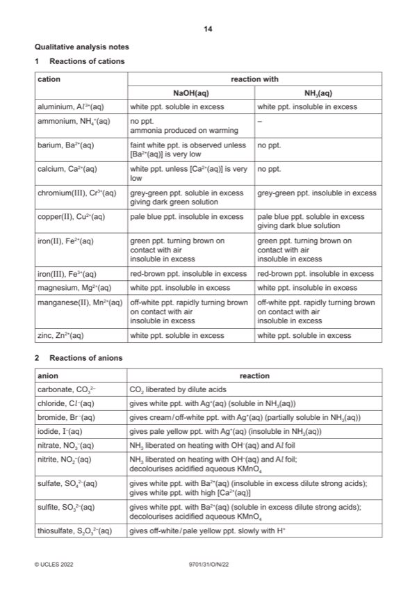

Question 1

Original paper page 14
Part 1(a) — solution
- two burette readings and titre for rough titration
- initial and final burette readings for two (or more) accurate titrations
- initial / start and (burette) reading / volume
- final / end and (burette) reading / volume
- titre or volume / FA 2 and used / added
- unit: /cm3 or (cm3) or in cm3 (for each heading) or cm3 unit given for each volume recorded
Mark points
- two burette readings and titre for rough titration
- initial and final burette readings for two (or more) accurate titrations
- initial / start and (burette) reading / volume
- final / end and (burette) reading / volume
- titre or volume / FA 2 and used / added
- unit: /cm3 or (cm3) or in cm3 (for each heading) or cm3 unit given for each volume recorded
Part 1(b) — solution
- candidate must take the average of two (or more) titres that are within a total spread of not more than 0.20 cm3
- working / explanation must be shown or ticks must be put next to the two (or more) accurate readings selected
- the mean should be quoted to 2 dp and be rounded to the nearest 0.01 cm3
Mark points
- candidate must take the average of two (or more) titres that are within a total spread of not more than 0.20 cm3
- working / explanation must be shown or ticks must be put next to the two (or more) accurate readings selected
- the mean should be quoted to 2 dp and be rounded to the nearest 0.01 cm3
Part 1(c)(i) — solution
significant figures (sf) 1
all quoted answers in (c)(ii) – (c)(iv) are expressed to 3 or 4 sf
Mark points
- Include the ideas shown in the solution above.
Part 1(c)(ii) — solution
Answer: 1000
- amount of MnO4− = (mol)
Mark points
- amount of MnO4− = (mol)
Part 1(c)(iii) — solution
- amount of (COO−)2 that reacted = (c)(ii) 5 (mol)
Mark points
- amount of (COO−)2 that reacted = (c)(ii) 5 (mol)
Part 1(c)(v) — solution
- [M1] Ar of M = r
Mark points
- [M1] Ar of M = r
Part 1(d) — solution
explanation for use of acid 1
to provide H+
and
for the reaction (to proceed) / as given in the equation / to acidify the KMnO4
2022 Page 6 of 10
9701/31 Cambridge International AS & A Level – Mark Scheme October/November 2022
Mark points
- Include the ideas shown in the solution above.